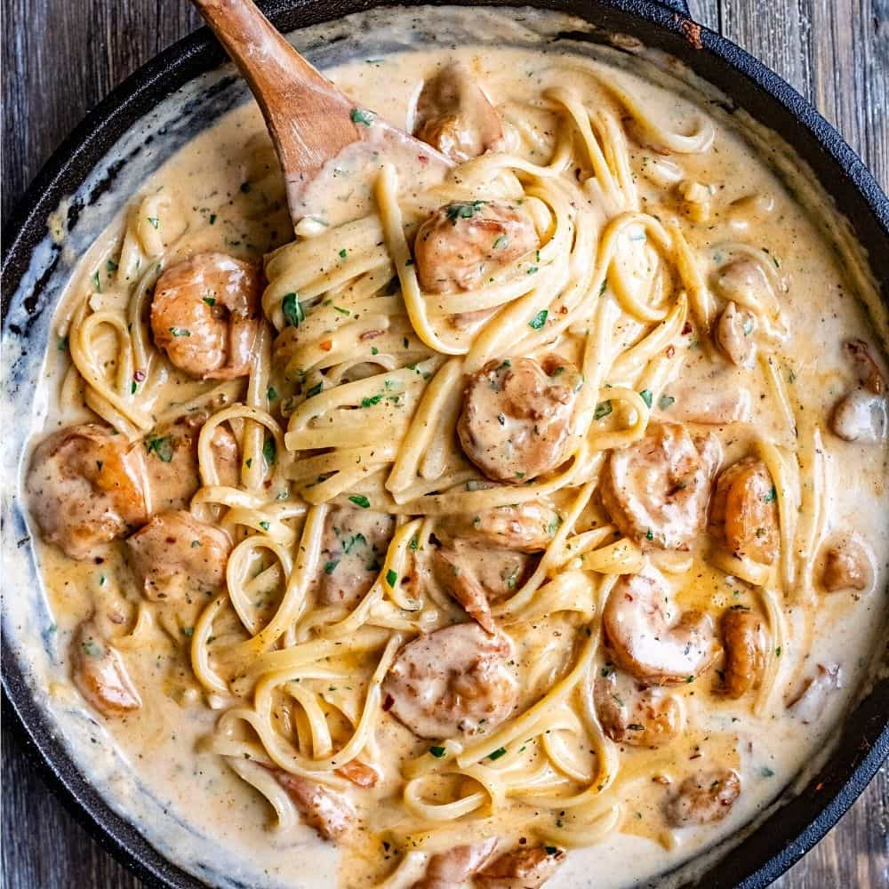

Cajun Shrimp Pasta

Description
Ever since I learnt how to make this recipe, it has been my go-to recipe whenever
I need to meal-prep for the upcoming work week. This is a meal that I could honestly eat
everyday. We all know pasta is a good source of carbohydrates, and with the additional
ingredients that go into this dish, it'll become a staple for you!
Ingredients
- Spices
- Cajun seasoning
- Badia Sazon Tropical
- Old Bay seasoning
- Smoked Paprika
- Onion powder
- Garlic powder
- White pepper seasoning
- Parsley flakes
- Zatarain's Concentrated Shrimp & Crab Boil (optional - if you prefer a spicer dish)
- Food Items
- Onions (1 or 1/2)
- Garlic
- Butter
- Olive oil
- Heavy whipping cream
- Half-and-half (optional)
- Shrimp (preferably tail-off)
- Pasta (preferably fettucine)
- Lump crab meat (opional - this really transforms the dish!)
Steps
Home